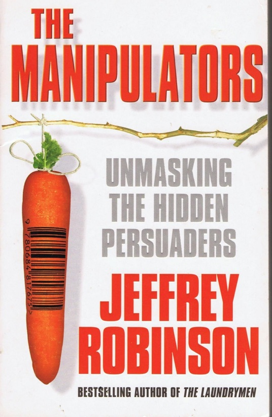
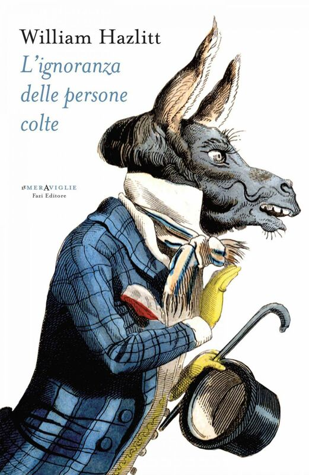
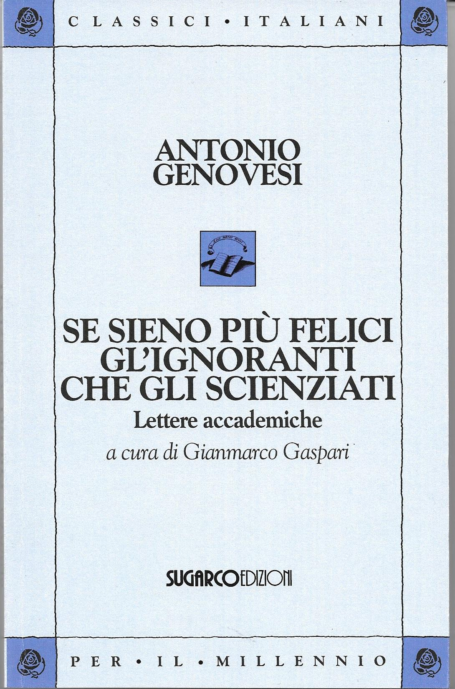

47:19 · 13 OPERE
La ragione unisce, la sragione divide.
Il filo del discorso
Il relatore distingue la ragione che interroga i fini dalla sola efficienza dei mezzi, prendendo avvio da Eclisse della ragione di Max Horkheimer. Collega questa distinzione alla propria idea di una ragione prima e seconda, poi ai libri di Packard e Jeffrey Robinson sulla persuasione. Il confronto con Platone, Schweitzer e Pascal introduce etica, responsabilità e autonomia del giudizio.
Leggi la sintesi completaRiduci la sintesi
Ampie digressioni riguardano autismo, contaminazione di Flint, comunicazione sui farmaci, garanzie costituzionali e rischio nucleare; la scheda ne separa le opinioni e le accuse dalle conclusioni sostenibili. La parte finale torna alla formazione: una conoscenza condivisa può rendere possibile il dialogo, mentre l’obbedienza senza comprensione lo impoverisce. Hazlitt e Genovesi accompagnano la critica della erudizione e della scuola, che si chiude con un invito a ragionare insieme. L’aumento delle diagnosi non prova da solo una causa ambientale, una notizia non equivale a una condanna e la storia degli armamenti non autorizza generalizzazioni sulle cause di morte di tutti gli scienziati.
I libri nel discorso

Eclisse della ragione. Critica della ragione strumentale
Note sul riferimento
Copertina: Einaudi, Biblioteca Einaudi, 2000, traduzione di Elena Vaccari Spagnol, ISBN 9788806154370. Il titolo è anche catalogato con la variante Eclissi; la copertina acquisita reca Eclisse. Originale inglese Eclipse of Reason, 1947.
Copertina autentica Einaudi bianca con fascia blu, autore, titolo e sottotitolo leggibili. Non è la copertina del diverso Crepuscolo. Il collegamento all’editore Bloomsbury verifica l’opera originale, mentre la copertina italiana proviene da IBS.
Horkheimer, Eclisse della ragione e primo capitolo espliciti, con lettura dei passi su utilità e rapporto fra mezzi e fini.

I persuasori occulti
Note sul riferimento
Copertina: Einaudi · ET Saggi · 2015 · traduzione di Carlo Fruttero
Immagine autentica dell’opera, controllata visivamente; l’edizione di riferimento non è attribuita al filmato.
Vance Packard e I persuasori occulti espliciti come precedente del libro di Robinson.

The Manipulators: Unmasking the Hidden Persuaders — The Conspiracy To Make Us Buy
Note sul riferimento
Copertina: Edizione digitale Jeffrey Robinson, 9 settembre 2013, distribuzione Draft2Digital, 367 pagine nel catalogo Apple, ISBN digitale 9781301222131. Copertina verticale autentica fornita con questa edizione dall’autore tramite Apple Books; riprende la grafica di una stampa, senza identificarla come la copia mostrata nel video. Il codice a barre nel disegno non viene usato per attribuire una diversa edizione.
Immagine autentica dell’opera, controllata visivamente; l’edizione di riferimento non è attribuita al filmato.
Jeffrey Robinson, The Manipulators e sottotitolo Unmasking the Hidden Persuaders espliciti, con lettura inglese a1713,2204,2280 secondi.

La Repubblica
Note sul riferimento
Copertina: Laterza · La Repubblica · edizione con testo a fronte di riferimento
Immagine associata all’ISBN di riferimento e controllata visivamente; edizione e traduzione non identificate come quelle citate o lette nel video.
Repubblica e Trasimaco espliciti nella discussione sulla giustizia come utile del più forte.

La società aperta e i suoi nemici
Identificazione probabile
Note sul riferimento
Copertina: Armando Editore · Classici · 2018 · volume unico
Copertina autentica di riferimento, controllata visivamente. L’edizione non è identificata come quella usata nel video.
Allusione a Platone come nemico della società aperta; titolo e autore non pronunciati, collegamento probabile con Popper.

Costituzione della Repubblica Italiana
Note sul riferimento
Copertina dell’edizione Intra aggiornata al 2023: Intra · 2023 · introduzione di Umberto Vincenti
Copertina autentica del testo integrale, aggiornata alla legge costituzionale 26 settembre 2023 n.1. È successiva al filmato del 2019 e non rappresenta la versione storica letta dal relatore. Umberto Vincenti firma l’introduzione.
Uguaglianza, obbligatorietà della azione penale e sovranità richiamate; articolo1 esplicito a 1808 secondi.

The Decay and Restoration of Civilization
Identificazione probabile
Note sul riferimento
Copertina della raccolta: Prometheus · The Philosophy of Civilization · 1987 · raccolta in inglese
Copertina della raccolta Prometheus del 1987 che contiene The Decay and Restoration of Civilization e Civilization and Ethics. I due saggi, originariamente distinti, restano voci separate. L’edizione in inglese dell’immagine non è attribuita al video.
Schweitzer e due volumi su cultura e civiltà espliciti, titolo di questa parte non pronunciato: collegamento probabile con la prima parte della Kulturphilosophie.
Civilization and Ethics (Kultur und Ethik)
Identificazione probabile
Note sul riferimento
Copertina della raccolta: Prometheus · The Philosophy of Civilization · 1987 · raccolta in inglese
Copertina della raccolta Prometheus del 1987 che contiene The Decay and Restoration of Civilization e Civilization and Ethics. I due saggi, originariamente distinti, restano voci separate. L’edizione in inglese dell’immagine non è attribuita al video.
Seconda parte della Kulturphilosophie, cultura ed etica, richiamata con il riferimento ai due volumi e al rapporto fra etica e civiltà; identificazione probabile.

Pensieri
Identificazione probabile
Note sul riferimento
Copertina: UTET · a cura di Bruno Nacci · 2021
Copertina autentica dell’edizione di riferimento, non attribuita all’esemplare del video.
Pascal e la scommessa espliciti; titolo non pronunciato, riferimento probabile al frammento dei Pensieri.

Bhagavadgītā
Identificazione probabile
Note sul riferimento
Copertina: Adelphi, gli Adelphi 29, 1991; a cura di Anne-Marie Esnoul, traduzione di Bianca Candian.
Immagine autentica dell’opera, controllata visivamente; l’edizione di riferimento non è attribuita al filmato.
Allusione tramite la frase attribuita a Oppenheimer; identificazione probabile con XI32, titolo non pronunciato e non prova di parole registrate al momento di Trinity.

Apologia di Socrate
Identificazione probabile
Note sul riferimento
Copertina del volume Apologia di Socrate. Critone: BUR · Apologia di Socrate. Critone · a cura di Maria Michela Sassi, 1993
Copertina autentica del volume BUR contenente Apologia di Socrate e Critone. Il secondo titolo non è aggiunto come citazione del video; l’autore del testo è Platone, con Socrate come figura protagonista.
Socrate e la vita non esaminata riconoscibili: riferimento probabile ad Apologia38a, titolo non pronunciato.

L’ignoranza delle persone colte (Sull’ignoranza delle persone colte e altri saggi)
Note sul riferimento
Copertina: Raccolta Fazi, traduzione e cura Fabio De Propris. Il catalogo digitale indica 29 aprile 2013, 170 pagine, EPUB ISBN 9788876251948 e PDF ISBN 9788876251955. Immagine autentica attualmente fornita dal catalogo Fazi per la raccolta, non prova della grafica della prima stampa del 1995 o della edizione posseduta dal relatore. Le ristampe a stampa, compresa quella del 2015, hanno dati propri.
Immagine autentica dell’opera, controllata visivamente; l’edizione di riferimento non è attribuita al filmato.
Hazlitt e titolo italiano della raccolta Fazi espliciti; il parlato ricorda l’editore.

Se sieno più felici gl’ignoranti che gli scienziati. Lettere accademiche
Note sul riferimento
Copertina: Immagine corrente dell’editore SugarCo, collana Classici italiani per il millennio, a cura di Gianmarco Gaspari, 208 pagine. Edizione bibliografica del 1993, Carnago, ISBN valido 9788871982502; la singola tiratura della fotografia non è stabilita.
Copertina autentica fornita da SugarCo: fondo azzurro, autore, titolo, Lettere accademiche e curatore leggibili. Il video cita espressamente il 1993, ma questa immagine del catalogo corrente non certifica l’esemplare mostrato. La scheda dell’editore stampa un ISBN con cifra finale 9, non valida: si conserva il riscontro catalografico con cifra finale 2, senza riprodurre il refuso.
Genovesi e il confronto sulla felicità di ignoranti e persone colte sono espliciti. Il titolo è riscontrato nelle fonti bibliografiche.